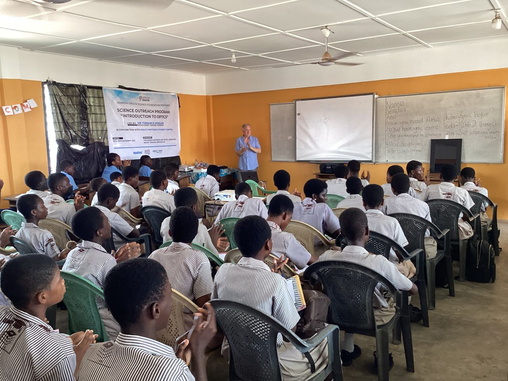

In rural Ghana, brilliant young girls often face a visibility gap, where becoming a scientist or engineer feels distant. The Sankofa Girls in Science Foundation was created to bridge that gap.
What began as one determined yes in 2010 has grown into a 15-year movement, empowering more than 500 girls to dream big and turn those dreams into reality.
We see a Ghana where the next generation of scientists, engineers, doctors, and technologists looks different. Where a girl from any region, any background, any school picks up a chemistry textbook and feels it was written for her.
Our vision is that, in Ghana, an ever-increasing number of girls will study science in secondary school, automatically seek to further their studies at the tertiary level,and actively plan to have careers as leaders in the fields of Science, Technology, Engineering, and Mathematics (STEM).
We aim to act as a vehicle that actively, consistently, and intentionally empowers girls to believe in themselves and their ability to study science and STEM subjects up to and beyond the tertiary level and become leaders in the field of STEM.
Our work spans awareness, confidence-building, mentorship, and community. Everything we do is in service of one thing: making a STEM career feel not just possible, but inevitable, for every girl we reach.

Nana Beecham's journey is rooted in a legacy of service, inspired by her mother, Tina Ekuwa Addae, whose own education under Catholic mentors in the 1950s instilled the values of humility and uplifting others. What began in 2007 as an unassuming request to mentor two young women ignited a passion that would reshape Nana's perspective on the power of professional guidance and shared experience.
This path led her from local initiatives in Ghana to the prestigious Fortune U.S. State Department Women's Mentoring Partnership, where she was paired with global trailblazers at Xerox and Young & Rubicam. She returned home carrying the same spirit of "lifting as we climb" — and planted it on Ghanaian soil.
"Mentorship plants seeds that bloom across generations."
Today, as the heart of the Girls in Science programme, Nana helps young women see beyond traditional roles — watching as her mentees evolve from uncertain students into PhD candidates and business leaders across the globe. What started as a small pilot at Breman Asikuma Senior High School in 2010 has grown into a fully licensed national foundation with a global board of directors.
SGiS pilot programme launched at Breman Asikuma Senior High School (BASHS) after Nana Beecham returned to the community. Fuelled by a promise to honour a local legacy of education, the journey began with a single classroom and a bold belief.
The earliest SGiS cohort earns admission into science programmes at Ghanaian universities — proof that mentorship, consistently given, changes the trajectory of a young woman's life.
SGiS formalizes peer mentorship through the in-school club model — building a generation of girl leaders who support each other, not just students waiting to be supported.
A dedicated Science Library and Reading Room is established at BASHS — a physical home for curiosity, where girls can read, research, and imagine themselves as scientists.
The programme expands beyond science knowledge to include soft-skills training and leadership development — because a confident girl who can communicate her vision is unstoppable.
More than 500 girls have been reached through SGiS programmes, with a growing cohort of alumnae now enrolled in STEM-related degrees — and many returning to mentor the next generation.
After 15 years of grassroots momentum, SGiS is formally incorporated as a licensed nonprofit foundation with a global board of directors — transforming from a local initiative into a sustainable, internationally connected movement.
Our core philosophy is rooted in the Akan concept of Sankofa — the wisdom of learning from the past to build a better future. These are the principles that guide everything we do.
Science and technology are the languages of the future. Fluency in them is power — and every girl deserves access to that power, unconditionally and without barriers.
The gender gap in STEM is not a natural phenomenon. It is structural — built by systemic barriers, stereotypes, and lack of resources. And structures built by people can be changed by people.
We believe in "Ubuntu" — I am because we are. Educating a girl doesn't just change her trajectory; it uplifts her entire community. We build with schools, families, and industry together.
Our motto is our compass: continue to dream, dream big, and work with relentless commitment to make those dreams a reality. We want our girls to aspire loudly and pursue boldly.
We believe in "Giving Forward" — mentorship as a self-sustaining cycle. When a girl sees a woman who looks like her leading a lab, the impossible becomes achievable. Representation is transformation.
The Sankofa bird flies forward while looking back. We honour the legacies that shaped us — and carry them forward into the futures we are building for the next generation.
Our team brings together educators, scientists, advocates, and community builders — all united by one conviction: every girl in Ghana deserves a seat at the STEM table.
Join us in building the future every girl in science deserves.